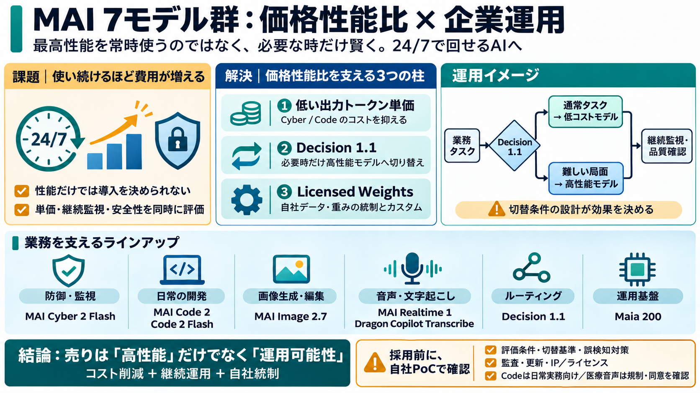

Microsoft AI Releases MAI Code 2 and MAI Code 2 Flash for Enterprises – Unite.AI
Across DeepSWE 1.1, Terminal-Bench 2.1, SWE Atlas and FrontierCode v1.1, Microsoft reports a 63.2% average pass rate and…

Across DeepSWE 1.1, Terminal-Bench 2.1, SWE Atlas and FrontierCode v1.1, Microsoft reports a 63.2% average pass rate and…
Averaged over four widely used benchmarks that target the everyday enterprise coding tasks we see in GitHub Copilot (Dee…
## FAQs What Are Microsoft’s Seven New MAI Models? The seven announced models are MAI Cyber 2 Flash, MAI Code 2, MAI C…
### Coding On DeepSWE v1.1, which evaluates complex software-engineering tasks in real codebases, GPT-6.1 Sol matches G…
For the stated presets, chat costs $0.007 on GPT-6.1 Sol and $0.0008 on MAI-Code-1.1-Flash; repository review costs $0.1…